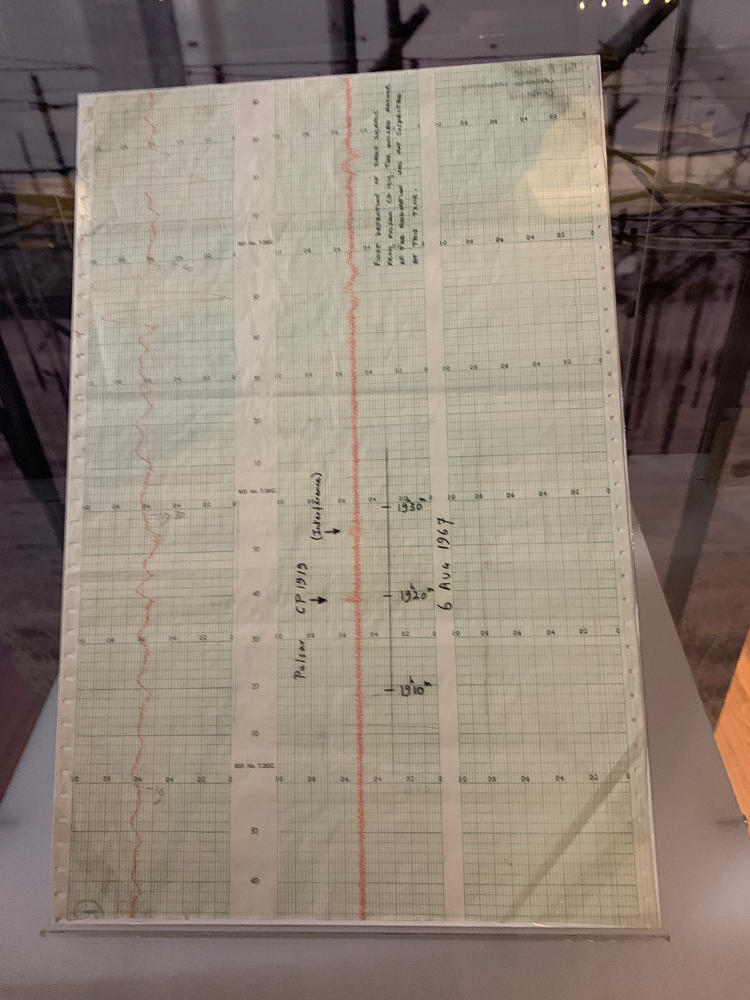
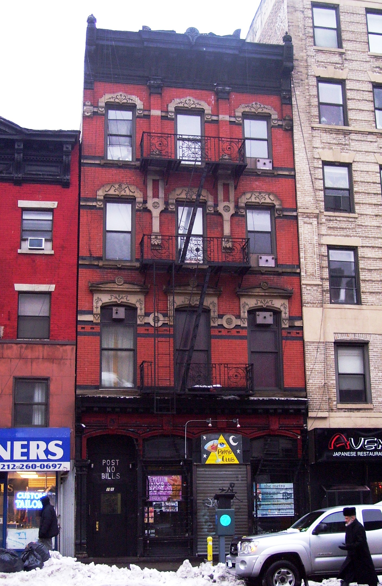
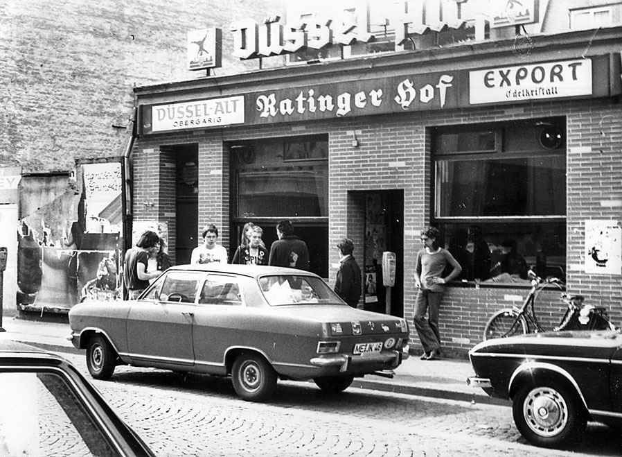
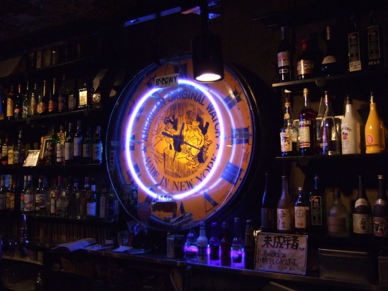

Tuesday · Music
(c. 1977–1984): after the first wave, bass, , and independent labels
When split in January 1978, the short song did not stop. Groups in Manchester, Leeds, London, New York, Düsseldorf, and Tokyo kept independent 45s and changed the rhythm, the bass, and the studio. Critics later called the stretch .
{kind=link}
“” is a press and critic label, not a union card and not a single sound. Writers applied it after the to records made roughly 1977–1984 that kept ’s shortness and independent means and dropped its three-chord rulebook. This lesson is that first stretch. It is not a history of , which kept the shortness and raised the speed. It is not a lesson: ’s (1981) and the chart electronics that followed are named as a later fork, not taught. as a brand, as a separate catalogue, and the 1990s–2000s revival are out of scope. New York, Manchester, Leeds, Düsseldorf, and Tokyo were contemporaneous scenes, not a required pairing. 1970s and early-1980s band photographs are usually still in copyright, so the pictures here are buildings, a 1978 street outside , a museum chart, and a later bar interior, captioned as such. Where a free picture could not be found, the lesson does without. No AI people.
Select any words, or tap a dotted term.
- 1977 The hinge issue in December: twenty-one short tracks that already leave first-wave ’s grammar. In Manchester, — , , , — are playing the same circuit that had watched at the in 1976. in Cleveland record . In Tokyo, has been open since 1 October 1976.
- 1978 After Winterland ’ last gig of the original run: , San Francisco, 14 January. The group splits. forms in London with , , and . (, 13 October); (8 December). issue . in Edinburgh issues ’s EP. compiles . puts out () in December. From July, runs Sundays at his Roppongi studio.
- 1979 The year of the LPs , ( 10, 15 June), recorded at , Stockport, with . , (, September), produced by . , (, 25 September). , (). ’ debut on . , (, 23 November): three 12-inch 45s in a film canister. , . , (, August). record the tracks later heard on .
- 1980 Curtis, Closer, New Order dies by suicide on 18 May, aged 23, on the eve of ’s first North American tour. ( 25) appears on 18 July. ( 23) is already in the shops. The remaining members continue as . issue (, October). issue their debut in Tokyo. recut as the gatefold (22 February) after the canister pressing of about 60,000.
- 1981–84 Machines, Hacienda, the window closes ’s ( 33, March 1981). issue , recorded with ; is the single. , from Melbourne, issue . opens () on 21 May 1982. By 1983–84 the independent infrastructure is in place and several of these groups are already leaving the window: toward dance records, toward , toward (1984). and chart are other forks. They are not this lesson.
Before
After Winterland, the short song was still useful
played their last concert of the original run at the in San Francisco on 14 January 1978, a hall far larger than or . ended the night with a question — “Ever get the feeling you’ve been cheated?” — and left. The group split. That date ends one press story. It does not end the short song, the independent 45, or the cheap rehearsal space. What a lot of players refused next was not stadium rock, which the first wave had already shouted at. They refused the uniform that had followed: three chords as a rule, the tabloid face, the idea that the fight was over because the were over.
Some records had already walked out of that rulebook while the first wave was still in the shops. ’s , released in December 1977 on , holds twenty-one tracks, most of them brief, with stops and gaps where a chorus would have been. , in Cleveland, issued in early 1978: ’s voice, a synthesizer used as noise, songs that did not behave like a London 45. In Manchester, the group that had started as after watching at the on 4 June 1976 were writing under a new name, . None of this waited for a critic to invent a category. The category came later, in the weekly papers and then in books, and it stuck as “.”
The economics had not improved. Britain in 1978–81 was still a country of unemployment, closures, and, from 1979, a Conservative government under . Manchester’s mills and docks were not a metaphor; they were a labour market. Leeds and Sheffield had the same weather in the figures. New York’s downtown rents were still low enough for a and a cheap PA. Those facts did not write the bass lines. They made the rehearsal time cheap, and they gave lyricists a vocabulary that did not have to be invented. records from Jamaica — , — were already in British shops and on ’s radio show. and were on the same radio, which is why a Leeds group could steal a rhythm without making a record. In Düsseldorf, and had spent the early 1970s putting repetition and a hard bass in the foreground. Those catalogues were on the shelf. used them.
The era
London, Manchester, Leeds: three catalogues, not one committee
Do not start with a map that has one capital. London, Manchester, and Leeds made records in overlapping months. They shared independent shops, , and a few producers. They did not share a sound. The useful way through is three catalogues, then the labels that pressed them.
In London, formed in the summer of 1978 with on guitar, () on bass, and on drums. The first single, “,” appeared on on 13 October 1978 and reached number nine on the UK Singles Chart. The debut album, , followed on 8 December. The second album is the one to slow down for. , released by on 23 November 1979, was three 12-inch records at 45 rpm and packed in an embossed metal film canister. and the group took the idea from 16 mm film cans. did not want the cost; the group paid part of it from their advance. About 60,000 copies were pressed by . The set was deleted the day it appeared, then reissued on 22 February 1980 as , a conventional gatefold. ’s bass is the argument: long, dub-derived, in the front of the mix. ’s guitar is metallic and does not solo. ’s voice sits on top without pretending to be . “,” “,” and are the tracks that show the method. , the 1979 single, put the same bass on a 45 that could be played in a club. This is not with extra effects. It is a different job.
In Manchester the label was the as much as the band. , a presenter on , and started in 1978. designed the sleeves and treated each — 1, a poster; , , two 7-inches in December 1978 — as an object. produced. managed and later sat on the board. The office, for a stretch, was a Victorian house at , . recorded with Hannett at in Stockport over weekends in April 1979. released it as 10 on 15 June. ’s bass carries the tune; ’s drums are dry and delayed; ’s guitar is a texture; sings as if the words were already a document. opens the album. and are the other tracks people name. , recorded at in London in March 1980, appeared on 18 July as 25, two months after ’s death. “,” 23, was already out. The remaining three members continued as . Their first single, “,” 33, March 1981, is a song finished after the . later built a club: , designed by , opened on 21 May 1982 at 11–13 , financed in large part by and the label. played the first night. That date sits at the edge of this lesson. The acid-house years of are another story.
{kind=link}

{kind=link}
In Leeds, — , , , — treated as a political tool and guitar as something you chopped rather than soloed. Their first record was a 12-inch on , the Edinburgh label run by : , with and “,” late 1978. signed them. appeared on 25 September 1979. “,” “,” “,” and are the tracks that show the method: ’s guitar cutting against Allen’s bass, King singing about work, sex, and slogans as if they were the same sentence. The BBC asked them to change “rubbers” to “rubbish” for Top of the Pops; they walked off. Around them in Leeds were and . None of this is Manchester exported down the M62. It is a university city with a small independent circuit and a group that had listened to and to and had decided the riff should argue.
The rest of the British field is not a supporting cast. left and formed ; appeared in 1978, and is the 45. had played Special in 1976; (1978) still has the first wave in its grain, and (1980) is already somewhere else. — , , , with on drums until she left, then — made with in 1979: reggae timing, talk-singing, as a list that refuses the list. — , — issued their debut on the same year. , with , were a Manchester group that did not join ’s design programme; is 1979, is 1982. followed with (1978) and (1979). ’s had been a Notting Hill shop in 1976 and a label from 1978; it pressed and distributed a lot of the independent 45s that majors would not. , , , and, in New York, ( and ) are the catalogue names to keep, not a complete industry history.
How it sounded
Bass in front, guitar at an angle, the studio as an instrument
A first-wave 45 is usually guitar, a count-in, and two minutes. A 45 often starts with the bass. on , on , on , on : the low string carries the tune, and the guitar comments, chops, or leaves holes. That habit has a source in , where the bass and the drum are the track and the rest is dropped in and out. British players did not have to become reggae groups to learn it. They had to own the records and leave space. and are influences here in the mix, not guest stars.
The guitar is often angular: a stuck rhythm, a metallic scrape, an anti-solo. said he wanted the opposite of a guitar hero. ’s parts on are sustained and sour. , on the records, is to a keyboard that happens to be six strings. Drum machines and cheap synthesizers enter in these years without this lesson becoming a synthesizer history. Hannett used delay and a Marshall Time Modulator on until the drums sounded like a room that did not exist. , in Sheffield, built pieces from tape at their studio. ’s first records, (1979) and (1980), are machine-led and still sit in this window; (1981) is the chart fork that a later lesson take. , in Düsseldorf, ran sequencers and a shout through ’s studio and arrived at in 1981. and are borrowed as rhythm — , , — without the lesson turning into a survey. The point is a danceable 4/4 that does not apologise for remaining a guitar record, or a sequencer record that does not apologise for remaining loud.
Independent pressing and distribution did the unglamorous work. A , a bag, a sleeve: these were how a Leeds or Manchester 45 reached a shop in London without waiting for ’s nerve to return. Majors still signed people — had , had , had , had — so “independent” is a method, not a purity test. Peel’s radio show remained a national distributor that did not look like one. The sound is the bass and the gap. The business is a and a van.
Elsewhere
The same years in New York, Düsseldorf, Tokyo, Melbourne
In New York the brief, named burst is . For five evenings in May 1978, in Tribeca put on a series of downtown groups. compiled four of them — , , , — on , issued by in November 1978. () ran as a fight between and noise; is the track that escaped the compilation. led . were , , and, for a stretch, , who had come from . This is not ’s 1975 circuit with a new haircut. It is shorter-lived, more art-world, and harsher. , who had used that earlier stage, continued as an art-school American parallel rather than a group: in 1979, with built on a sound poem and African percussion, then in 1980 with . , still in Cleveland, issued in November 1978. in New York pressed some of the same downtown names and a lot of disco-not-disco that this lesson does not teach. opened in 1979 at 101 Avenue A; it is a later East Village address, useful as geography, not as a 1978 bill.

{kind=link}
In West Germany the feeders were older than the word. and , from Düsseldorf and Cologne, had already put repetition, a dry drum, and a prominent bass on records in the early 1970s. The live address that mattered for the next generation in Düsseldorf was , a bar on Ratinger Straße. — and , after an earlier larger line-up — took sequencers, a shout, and a Korg into ’s studio outside Cologne and made in 1981 for . is a dance track built on a word liked the sound of; it is not a programme. Berlin’s , on Oranienstraße in Kreuzberg, booked overlapping bills. in London are industrial-adjacent in the same years; they are named so the border is visible, not so this becomes an lesson.

{kind=link}
In Tokyo the calendar overlaps rather than copies. opened on 1 October 1976. From July 1978, ran Sunday concerts at his Roppongi studio under the name — , , among them. , ’s bassist, had already played in New York with and then come back; that is a person on two bills, not a theory of influence. — , , — made clipped, humorous electronic pop; and are the tracks that travelled, and (1980) is the album that carried them into ’s American shops. , led by , issued on in August 1979; (“”) is the single. were in the same Tokyo years. None of this is an assigned Asian verse. It is a city with live houses, imported 45s, and groups who had their own jokes and machines.

{kind=link}
In Australia and had already made first-wave records; they belong to the earlier capsule. The group that sits in this window is , from Melbourne — , , , , — who moved to London and issued in 1981 and in 1982. That is a contemporaneous Australian line into the same British independent shops, not a ranking of cities.
After
What the years left: a catalogue, a club, and other forks
By 1984 the first stretch is over as a scene, even if several of the groups are still together. What it left is easier to name than a sound. Independent labels with catalogue numbers, a distribution habit (’s network, ’s self-image as a design project), and a British and American press that now had the word “” to file records under. took the remainder into dance singles and, with , into ; the acid-house period of that club is after this lesson. ’s and the chart synthesizer hits of 1981–84 are a fork this capsule refuses to teach. , especially in the United States, kept ’s shortness and raised the speed; it is the other after. as a shop tag took , early Cure, and the bass and made a costume. kept ’s and ’s tape and noise and built another catalogue. The 1990s and 2000s revival — groups filing themselves as — is out of scope. The 1977–84 is smaller: a few cities, a few dozen records, bass in the front, and a critic’s word that arrived on time to name them.
A question
A question to keep asking
If the first wave’s refusal was a two-minute song in a small venue, what is being refused once the bass, the drop, and an independent are doing the work?
Fun fact
The Unknown Pleasures sleeve is a radio plot of a pulsar, not a mountain range
designed the cover for ’s in 1979 from a small diagram in the . The image is a stack of successive radio pulses from , the first pulsar identified, later catalogued . plotted those pulses for his 1970 astronomy thesis, using data from the ; the encyclopaedia reprinted the figure. Saville reversed it to white lines on black and put no band name on the front. The chart photographed in this lesson is not that stacked plot. It is the 6 August 1967 paper printout, now shown at Cambridge, on which marked the same object — “Pulsar ” — when the pulses were still a surprise. One pulsar, two graphics, ten years apart: a laboratory strip in 1967, a sleeve in 1979.